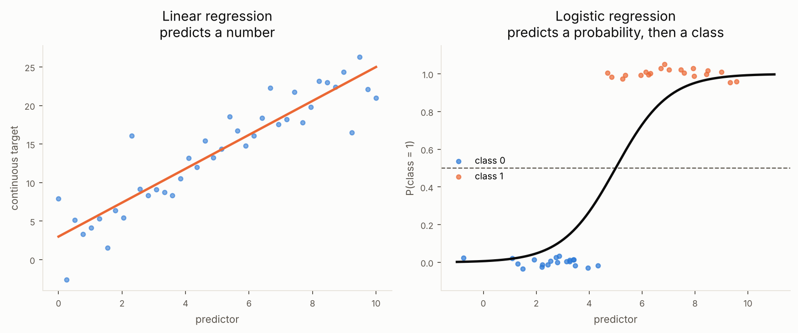
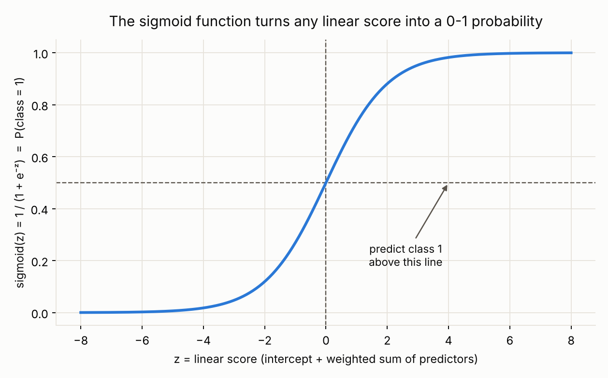
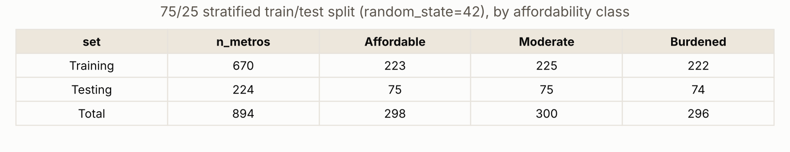
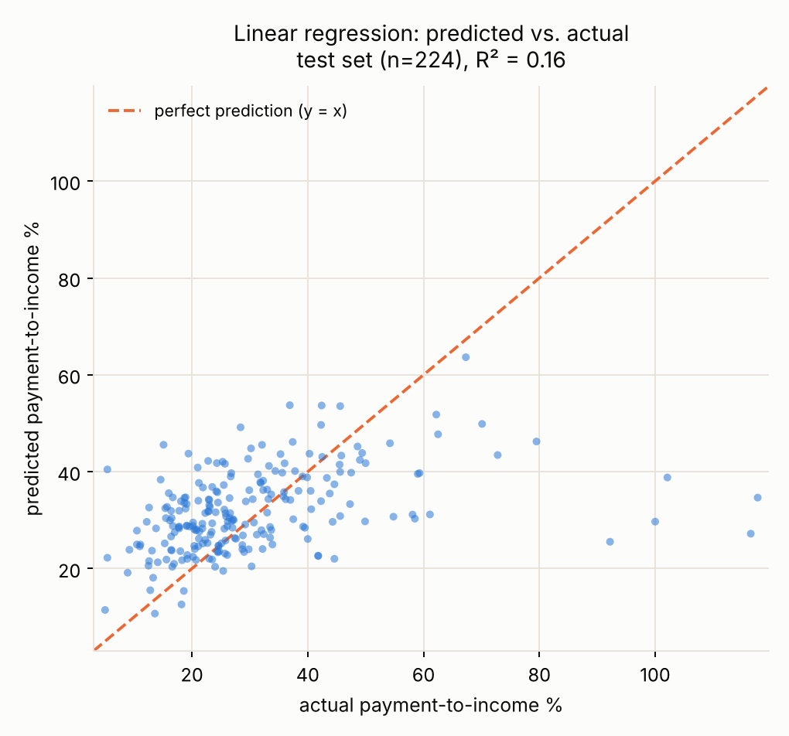
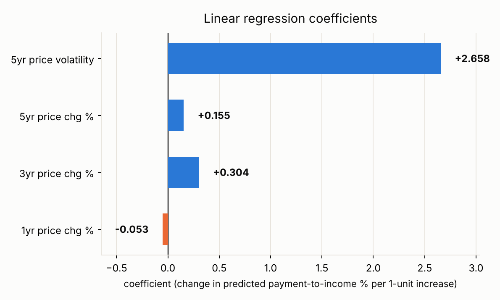
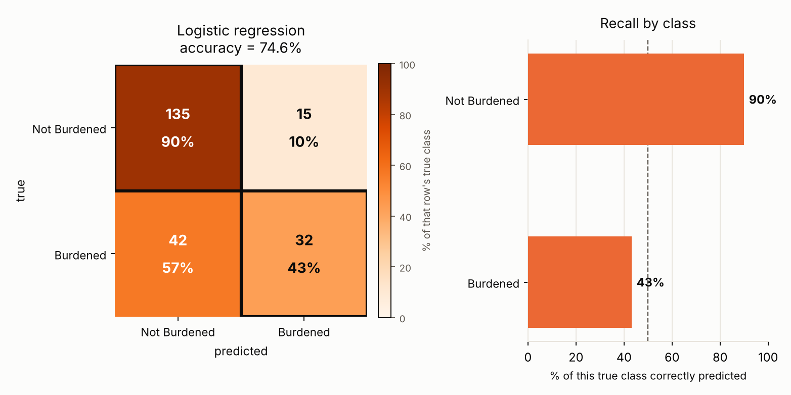

Regression
Linear regression on payment burden, logistic regression on the Burdened class
Objective. Predict a metro’s actual payment-to-income percentage directly, rather than just which tier it falls into, using linear regression; and predict whether a metro belongs to the single most policy-relevant tier, Burdened, using logistic regression, from the same four price-growth and volatility predictors used throughout this project.
Overview
While linear regression and logistic regression both carry the name “regression,” they serve different purposes. Specifically, while the first one estimates a numerical outcome (in this case, the actual affordability ratio of payment-to-income for young workers in a particular metro), the latter predicts classes by estimating their probabilities. In logistic regression, instead of drawing a line that connects points of either 0 or 1, the same weighted sum approach that is used in linear regression is employed. Then, the weighted sum passes through a special function, which outputs values ranging only between 0 and 1, and those values are interpreted as probabilities of belonging to the positive class (affordable). The threshold, which equals 0.5 in most cases, converts that probability into a class prediction. Linear regression and logistic regression are applied to the same four predictors, namely, 1, 3, and 5-year price growth and 5-year price volatility.


The squishing function, the sigmoid function, is given below. The function takes any real number, regardless of being positive or negative, big or small, and translates it to a smooth range of values between 0 and 1, where 0.5 is precisely the point at which an input equals zero. The linear model in the logistic regression (intercept + coefficient × predictor) gives an output, known as the linear score or logit, which can take any value from −∞ to +∞. The sigmoid function then transforms this output to a probability, and the cutoff point of 0.5 further converts this probability to a class. That is how logistic regression is different from linear regression: the output of the linear regression is the prediction, while that of the logistic regression is the intermediate step towards prediction.
Data Prep
Linear and logistic regression are both supervised techniques and require the same disjoint Training
Set and Testing Set previously used for Naive Bayes and Decision Trees: the same 894 metros, split into
670 training cases and 224 testing cases, stratified to make sure that the results remain comparable
across all supervised techniques used within this project. In this case, there are two targets instead of
one. Linear regression is applied to predict payment_to_income_pct_25_34, which is a
continuous variable indicating payment-to-income percentage, out of which the affordability_class
3-class target was derived. Logistic regression requires a binary target, and thus the
is_burdened column is introduced: 1 when a metro's affordability class is Burdened, 0
otherwise.

metro_2025_regression.csv: the same 4 predictors used throughout this project, the continuous payment-to-income target for linear regression, and the new binary is_burdened target for logistic regression.
Full file on GitHub ↗
Code
Python, using scikit-learn’s LinearRegression and LogisticRegression
directly on the unscaled predictors.
lin = LinearRegression().fit(X_train, y_train_lin)
lin_pred = lin.predict(X_test)
rmse = np.sqrt(mean_squared_error(y_test_lin, lin_pred))
r2 = r2_score(y_test_lin, lin_pred)
⋮ # logistic regression on the binary is_burdened target
log = LogisticRegression().fit(X_train, y_train_log)
log_pred = log.predict(X_test)
odds_ratios = np.exp(log.coef_[0]) # exponentiate each coefficient to read it as an odds multiplier- prep_regression_data.py : adds the is_burdened target onto the existing labeled table and split
- run_regression.py : linear and logistic regression, metrics, coefficients, figures
Results
Linear regression achieves a test RMSE of 15.94 and a test MAE of 10.58 (both in percentage points of payment-to-income), with an R squared of 0.156, indicating that the four independent variables can account for just 16 percent of the variation in actual payment burden across metros on unseen data points. The coefficient on 5 year price volatility is the largest among all, at 2.658, showing that one extra point of volatility leads to an increase in payment-to-income of about 2.7 points, everything else being equal. The coefficient on 1 year price change is small in absolute value and negative, at −0.053, which means that after controlling for 3 and 5 year trends and volatility, a metro's most recent one-year price change has practically no effect. Logistic regression achieves a test accuracy of 74.6 percent when predicting whether a metro is Burdened or not, which is better than the 68.8 percent achieved by Bernoulli Naive Bayes after collapsing its multi-class predictions into the same binary Burdened/Not-Burdened comparison. The 5 year volatility coefficient again stands out, 0.345, which converts to an odds ratio of 1.41: each additional point of 5 year volatility multiplies the odds of a metro being classified Burdened by about 1.41, holding the other three predictors fixed.
| Linear regression | Value |
|---|---|
| Test RMSE | 15.94 pts |
| Test MAE | 10.58 pts |
| Test R² | 0.156 |


| Logistic regression | Value |
|---|---|
| Test accuracy | 74.6% |
| Bernoulli NB (Part 3), collapsed to binary Burdened/Not-Burdened | 68.8% |
| Random guessing (base rate, ~33% Burdened) | ~67% |
Reading these two panels: each true class is a row on the left, outlined in black where that row crosses its own column, the metros the model got right. The bar chart on the right pulls exactly those outlined cells out as one recall percentage per class, with a dashed line at 50%.

Reading one logistic regression coefficient directly: the 5 year volatility coefficient, 0.345, converts to an odds ratio of e0.345 = 1.41 by exponentiating it. That means each additional point of 5 year price volatility multiplies a metro’s odds of being classified Burdened by about 1.41, holding the other three predictors fixed, the same predictor that dominates the linear regression coefficients above.
Logistic regression (74.6% test accuracy) outperforms Part 3’s Bernoulli Naive Bayes once Naive Bayes’ own 3-class predictions are collapsed down to the same binary Burdened/not-Burdened question (68.8%), a 5.8 percentage point gap on an identical comparison.
Conclusions
Reframing the affordability dilemma as a numerical prediction problem rather than a classification problem changes the story in very few ways: the four price-growth and volatility factors that had difficulty classifying the three affordability tiers also explain only a small part of the variation in payment burden, and 5 year price volatility remains the strongest indicator even in the regression analysis. The advantage logistic regression offers is the ability to focus more closely on the particular distinction that matters most when a young person is choosing an affordable place to live: collapsing the question down to two classes instead of the original three helps the model perform this narrower task noticeably better than Naive Bayes managed before.